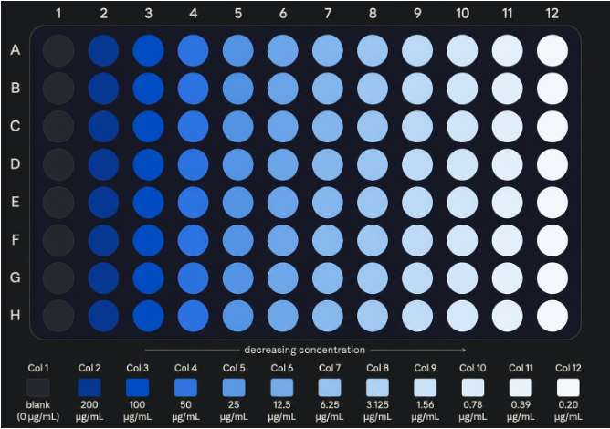
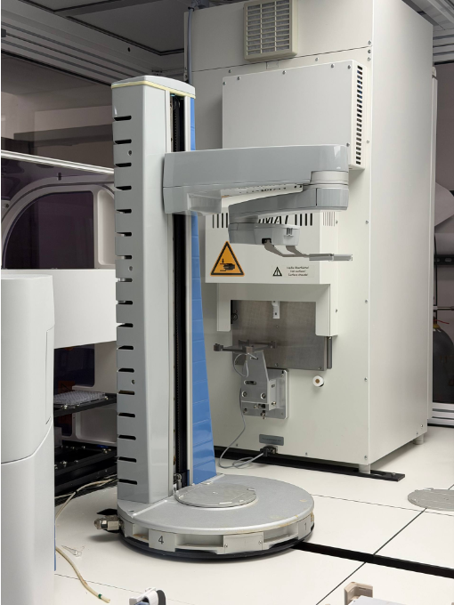
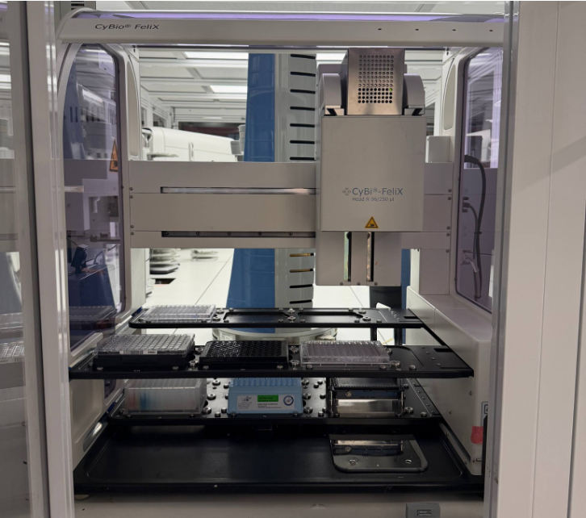
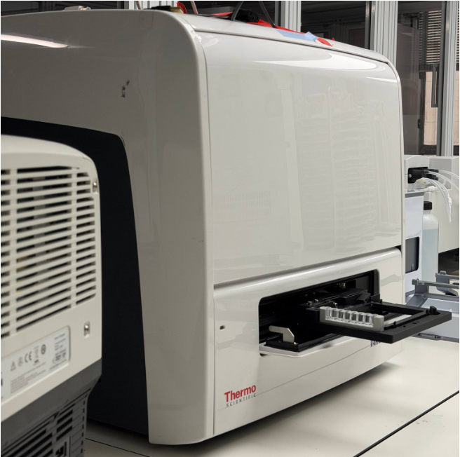

The Model Hardware Standard (MHS) research preview launched today. Over the past two and a half months, I've been part of it. Our team at Carnegie Mellon used MHS to let an AI agent run serial dilution dose-response experiments across multiple lab instruments, and I've contributed to the standard's Python SDK and proposed features for its next version.
I worked on this with Sina Barazandeh, Arth Banka, Jiayi Li, Peneeta Wojcik, Carl Kingsford, Jose Lugo-Martinez, and Joshua Kangas. Everything described here was collaborative, from the experimental design to the driver development to running the experiments.
This post is about what we built and what I matters for AI research.
What is MHS
MHS is a standard for AI agents to safely operate physical equipment. The problem it solves is: every lab instrument has a different interface some have APIs, some have COM scripting, some have nothing but a GUI, and making them work together under programmatic control takes weeks of integration engineering per instrument.
MHS replaces that with a single interface. Each device gets a manifest that declares its states (what conditions the system can be in) and procedures (what operations it can perform). An agent reads the manifest and operates the device through it. Safety constraints (bounds, interlocks, emergency stops) are declared in the manifest itself, so the agent inherits them by default.
The standard is model-agnostic. We used Claude Opus 4.8 in our work, but MHS isn't tied to any specific model.
The experiment
We picked serial dilution dose-response curves as our test case. In drug development, once you have a candidate compound, you need to figure out how much of it is needed to produce an effect. You do this by preparing a series of solutions at decreasing concentrations. You start with a high dose, dilute by a fixed ratio each time, and measure the biological response at each concentration.
The process is not straightforward. If you set the maximum concentration too high, the signal saturates, the response maxes out and you lose information at the top of the curve. If you set the step size wrong, you either don't cover enough range or skip over the transition region entirely. Getting it right usually takes multiple iterations. When done by hand, the whole thing takes days to weeks.
We used a colorimetric dye as a proxy for a drug candidate. Its color intensity tracks concentration, so it needs the same decision-making a real dose-response run would.

The setup
Our rig uses three computers, each running a different instrument with a different control interface:
- Computer 1: A Spinnaker robotic arm, controlled through scheduling software that watches a directory for submitted XML job files. It does not use API. You drop a file, it runs the job, and it generates two result files.
- Computer 2: A CyBio Felix liquid handler, controlled through a Windows ActiveX/COM scripting interface and USB-connected monitoring cameras.
- Computer 3: A Varioskan LUX plate reader. It does not have a programmatic interface at all. It is just a GUI on screen.
These are three completely different interfaces, each with a different complexity and none of them were designed to talk to each other.



No drivers needed
We pointed Opus at each instrument's interface and it figured out how to use them. For the liquid handler, which exposes COM scripting with no modern SDK, Opus explored the interface and wrote a functional driver itself. For the plate reader, which has no API of any kind, MHS drove the GUI the way a person would. It took screenshots, read what's on screen, and used mouse and keyboard to operate the software.
The entire integration from raw, non-automated instruments to a completed dose-response curve, including one autonomous rerun took eight hours. A vendor-built automated setup typically takes multiple weeks.
The bottleneck in lab automation has always been integration. You should learn to work with each instrument's quirks, write scripts to connect, and handle the edge cases. MHS lets the agent do the integration work that used to require a specialized sys admin.
Intelligence
The part that matters more, I think, is the decision-making.
The dose-response curve problem requires some judgment. You have to look at the resulting curve and decide: is this usable? Is the fit good enough? If not, what went wrong? Did the signal saturate at high concentrations? Is the range too narrow? What should I change for the next run?
A person doing this experiment would look at the curve, think about it, and decide whether to accept it or try again with different parameters. That's what the agent did.

Run 1 result, rendered by MHS orchestration and adapted from the Anthropic MHS announcement post.
On the first run, the agent tested concentrations up to 200 µg/mL. It looked at the resulting curve, found a poor fit (R² < 0.9) driven by saturation in the upper concentration range, and decided to reject the run. It discarded the plate, compressed the concentration range, dropping the top concentration from 200 µg/mL to 100 µg/mL and reran the experiment on a fresh plate.

Run 2 result, rendered by MHS orchestration and adapted from the Anthropic MHS announcement post.
The second run produced a strong fit (R² > 0.98) with low variation across repeated measurements. No human input was given at any point.
The typical approach to dose-response experiments involves multiple iterations to dial in the right parameters. Researchers often go through several rounds. The agent needed one reiteration. It understood what was wrong with the first curve, made a reasonable adjustment, and got a usable result.
This is an interesting case because the task requires both physical execution and scientific reasoning.
Safety
Before letting the agent run the full experiment, we tested whether it would catch problems the way a human operator would. We artificially induced six failure conditions: missing plate, rotated plate, reader busy, disconnected camera, unreachable device, and active emergency stop.
The system correctly blocked all six before any device moved. The camera check which confirms the plate is present and correctly oriented before any transfer is part of the standard workflow.
This matters because the standard encodes safety at the device level. Each instrument declares what it can and can't do, what states are dangerous, and what conditions must be met before an operation proceeds. The agent doesn't have to learn these constraints from experience or have them hard-coded in a separate safety module.
Contributing to the standard
Beyond the CMU case study, I've been contributing to MHS. I proposed two features that the team reviewed and approved for inclusion in the next version of the standard: Device reservations and leases and Device-local scheduling.
Both proposals are planned for v2. I also fixed a couple issues in the MHS Python SDK.
It's a small contribution relative to what Anthropic and the other teams have built, but it felt good to push on the multi-agent and scheduling problems early. These are going to matter more as MHS deployments scale.
Some ideas
For AI researchers:
The integration problem is largely solved. The fact that an agent can go from "here's an instrument I've never seen" to "I can operate it" in hours, including instruments with no API, changes the lab automation.
Physical tasks need reasoning. The dose-response experiment is a good example of a task where the physical actions are straightforward but the decisions are hard. The agent's value was in evaluating the curve and making a sound judgment about what to change. I expect this pattern to show up across many domains.
MHS is in a limited research preview right now. Access is by application. If you work in science, manufacturing, robotics, or electronics, you can apply through the MHS announcement page. The plan is to open-source the standard once the safety design is validated.
I'm looking forward to seeing what other teams build with it.